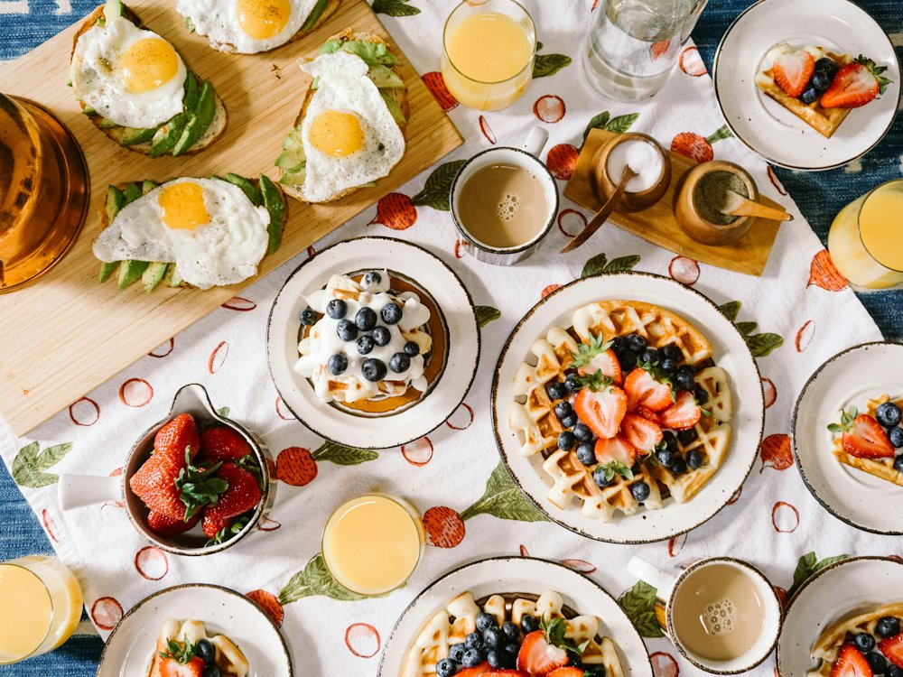

Qrupa
Кафе · Бистро · Алматы
Рейтинг
★ 4.8
743 оценок
Год открытия
нет данных
в открытых источниках не нашли
Средний чек
1 500 ₸
по данным 2ГИС
Адрес и часы
📍 ул. Байтурсынова, 17, Алматы · Алмалинский район
🕒 пн-вс 08:00-21:00
Удобства
О заведении
Бистро и кофе с собой, летняя веранда.
Меню
Рядом в справочнике
Qazy · Qaģanat · Qingdao · Qrupa Coffee · Queen of the darkness · Quelle